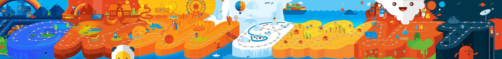
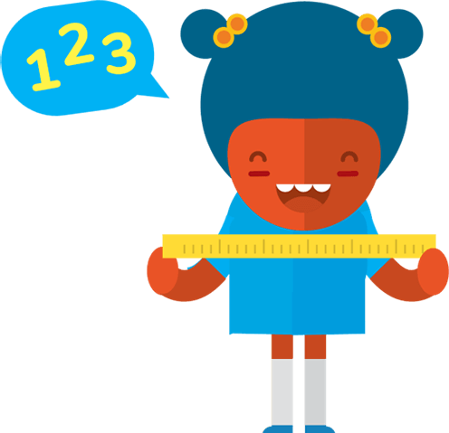
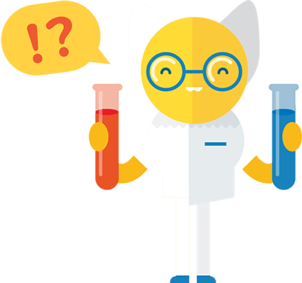

Grandir Malin
Télévision Educative
Enfant 3 à 8 ans
Qui Est Ludikids?
Ludikids est une chaîne linéaire éducative et pédagogique qui propose aux enfants âgés de 3 à 8 ans des programmes encadrés, ludiques et éducatifs mettant l’accent sur l’anglais et l’alphabétisation, les maths et l’arithmétique, les sciences et le monde autour de nous, l’apprentissage social et émotionnel

Thèmes Educatifs
Les programmes éducatifs de Ludikids donnent la priorité à l’anglais et à l’alphabétisation, aux maths et à l’arithmétique, aux sciences et au monde environnant, à l’apprentissage social et émotionnel

Anglais et Alphabétisation
ludikids introduit l’alphabétisation française et des compétences en anglais
telles que la phonétique, les lettres et les mots.

Les Maths et Arithmétique
Avec ludikids, les enfants seront exposés aux nombres, aux formes, aux calculs,
aux concepts d’additions et de soustractions.

Sciences et Monde Autour De Nous
Avec ludikids, les enfants acquerront de la connaissance sur les sciences, la
nature, la technologie, le monde environnant et sur la façon dont les choses fonctionnent.
L’apprentissage Social et Émotionnel
ludikids introduit des programmes pour encourager l’apprentissage social et
émotionnel essentiel au développement de l’enfant.